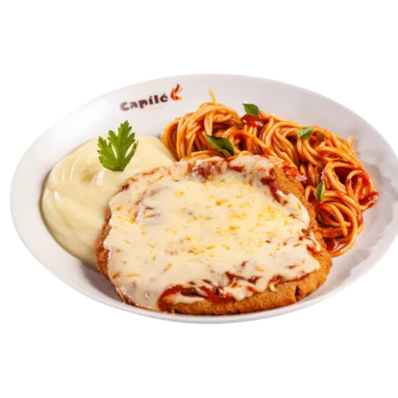
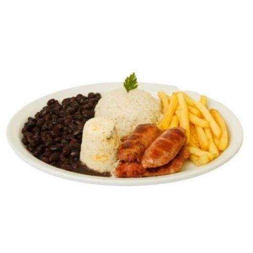

Cardápio
-

Parmegianinha R$ 75,98
- - Parmegiana Suculenta com você podendo escolher o sabor entre carne, frango ou vegetariana(sendo ela feita de abobrinha). Aprox 350g
- - Macarrão feito de massa artesanal criada por nós com molho ao sugo. Aprox 200g
- - Pasta de batata feita com creme de leite fresco e Manteiga Aviação. Aprox 200g
-

linguiça da Casa R$ 34,90
- Arroz Branco Sequinho e bem temperado. Aprox 200g
- Feijão Carioca Desmanchando com tempero da casa. Aprox 200g
- Batata Frita fatiada a mão e bem seuinha e crocante. Aprox 150g
- Farofinha da Casa Feita pela Mãe do Seu Jorge
- Linguiça Toscana Fatiada ao meio e feita na brasa com 2 Unidades, sendo possível Adicionar mais 1 Unidade por mais R$ 05,90. Aprox 300g
-

Ovo da Kelly R$ 29,90